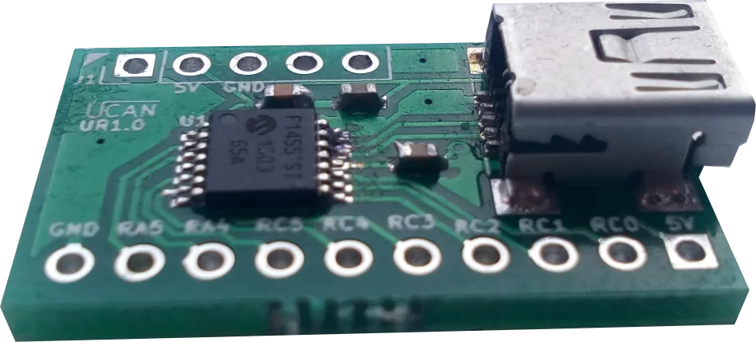
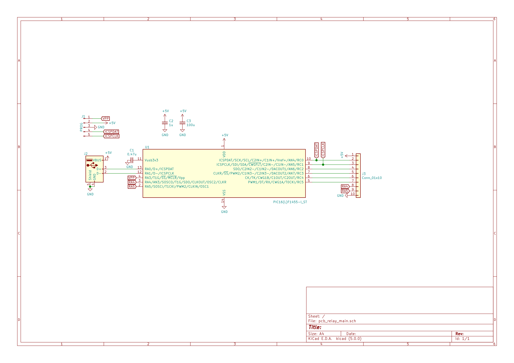

Product and its documentation is supplied on an as-is basis and no warranty as to their suitability for any particular purpose is either made or implied. Producer will not accept any claim for damages howsoever arising as a result of use or failure of this product. This product is not intended for use in any medical appliance, device or system in which the failure of the product might reasonably be expected to result in personal injury.
Usb Relay is device, that is used to set timing conditions for relays. Features
Board top view

After USB enumeration device creates virtual COM port that is used both for data transfer and converter setup.
Device is be powered directly from USB.
Board layout is shown below.
Below is list of all available commands. USART baud rate is virtual so can be any. All commands are ASCI format. Commands are terminated with newline character CR (0xD) '\n'. On error the device responses with various error messages if command is ok then "OK\n" value is returned. Relay command are in format RrDdddCccc,SsPppp,SsPppp..\n
| Parameter | Description |
| Rr | r - Relay number form 0 to 7. |
| Dddd[optional] | ddd - one time delay in ms max 4294967295U if non passed then instant action. |
| Cccc[optional] | ccc Cycles count max is 4294967295U if non passed then infinity |
| Ss[for each step] | s 0 or 1 output state during cycle |
| Pp[for each step, optional] |
Cycle length/period in ms, how long relay state will last max 4294967295U, if not passed then instant switch |
| OFF | Stop switching timer |
| ON | Start switching timer |
| SC | Save configuration to non volatile memory, after power up cycle will start automatically |
000000: R0D800,S1P5000,S0P2000 (Set Relay0 with delay 800ms, [Step1] state 1 period 5000ms, [Step2] state 0 period 2000ms)
OK
000001:R1D200,S1P1000,S0P1000 (Set Relay1 with delay 200ms, [Step1] state 1 period 1000ms, [Step2] state 0 period 1000ms)
OK
000002: SC (Save configuration to non volatile memory)
OK
We are using microchip PIC16F1455 microcontroller. Device PCB is designed in ki-cad. All source files are available in github here.

Converter software is pure C code written in free MPLAB X IDE. All sources and releases with compilation instructions are available in our github here.
Currently there is no bootloader, uploading new software requires dedicated programmer.
You can use USB Relay on any operating system with serial terminal program like for example putty. Description of all available commands can be found in About section. Currently there is no additional tools available for this device.
import serial
# before start
# 1. pip install pyserial
# 2. sudo chmod 666 /dev/ttyS6
ser = serial.Serial('/dev/ttyS6')
#print(ser.name)
ser.write(b'R0D800,S1P5000,S0P2000\r')
print (ser.readline())
ser.write(b'R1D200,S1P1000,S0P1000\r')
print (ser.readline())
#for x in range(8):
# ser.write(b'R'+str(x)+',S1P1000,S0P2000\r')
# print (ser.readline())
ser.write(b'SC\r')
print (ser.readline())
ser.close()